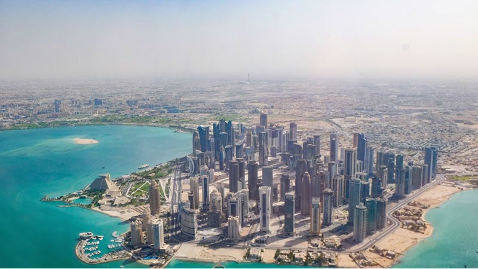

Doha, Qatar
Doha is Qatar's largest city and commercial centre. It has a population of 2.4 million.
Read more...Clamping card: Sets an absolute min and max size, and an actual size for the card.
Doha is Qatar's largest city and commercial centre. It has a population of 2.4 million.
Read more...